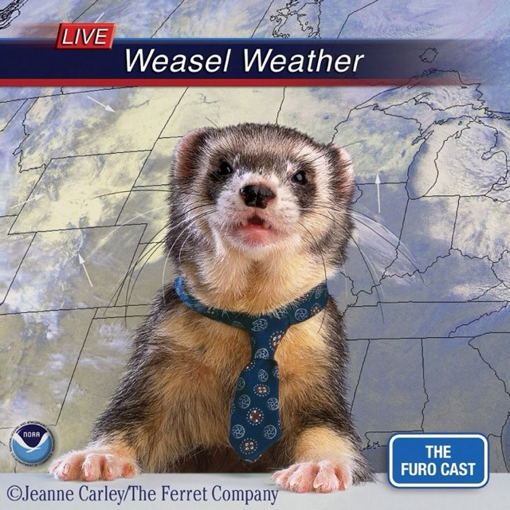

Datos Random
Es una pagina sobre pequeñas cosas mias personales (tal vez vaya aumentando nose)
Canciones Preferidas
Colgare links de algunas canciones (cuando me acuerde)
Mensaje
Un pequeño mensaje para ti taiyo

1.- Quiero agregar que soy nub aun creando
2.- Es un espacio para que me puedas conocer mejor apesar de que este ocupada
3.- Espero que te agrade esta pagina web xdd
Es una pagina sobre pequeñas cosas mias personales (tal vez vaya aumentando nose)
Colgare links de algunas canciones (cuando me acuerde)
Un pequeño mensaje para ti taiyo
